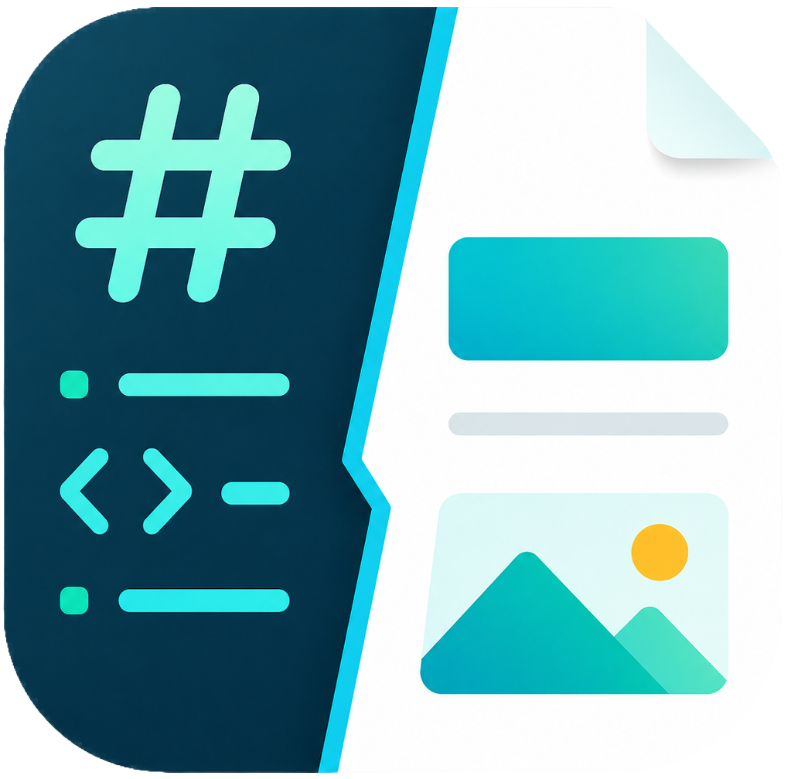
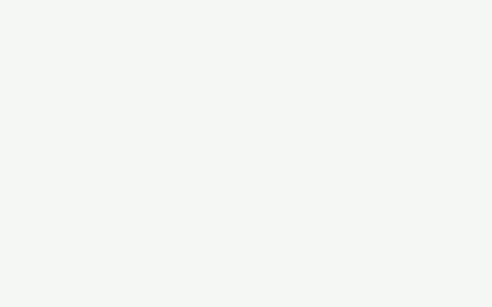
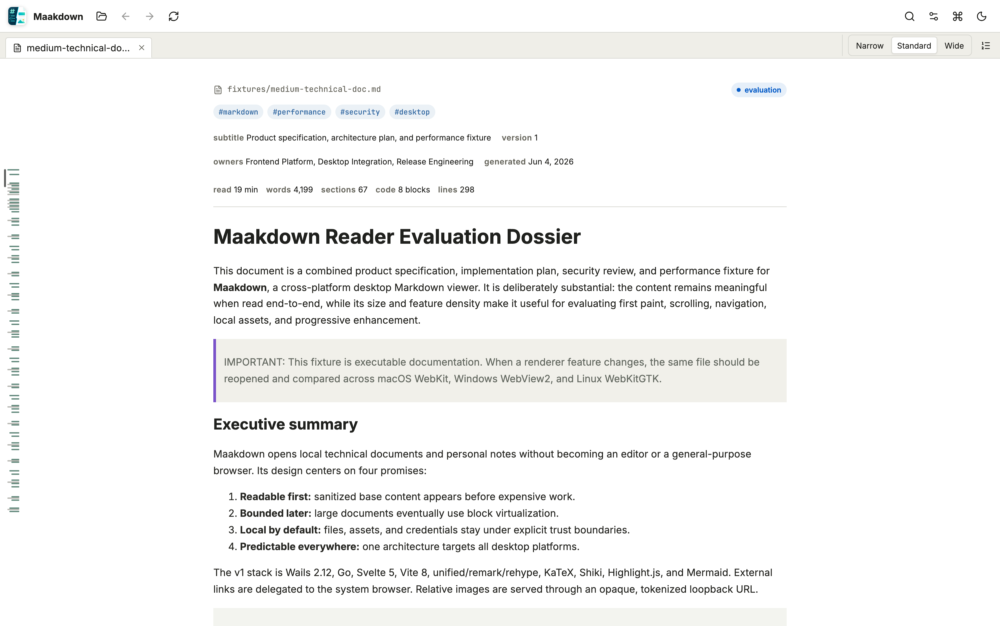
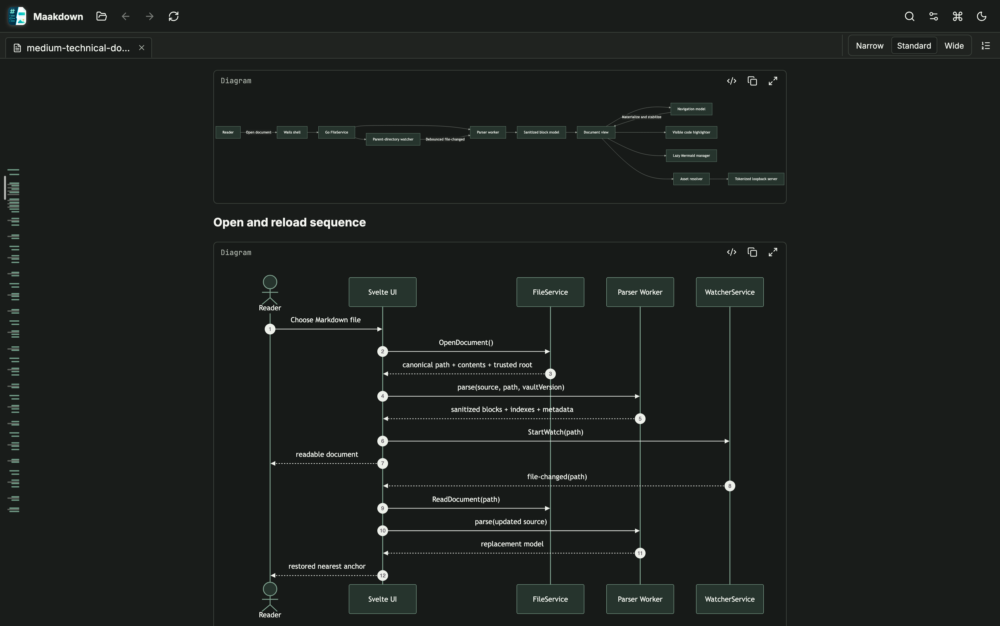
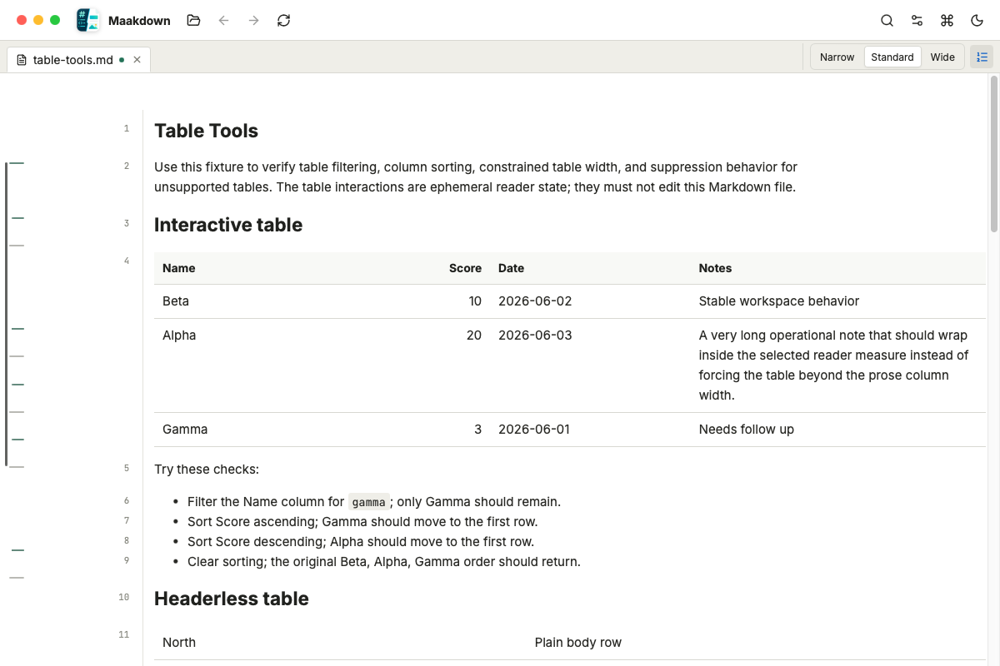
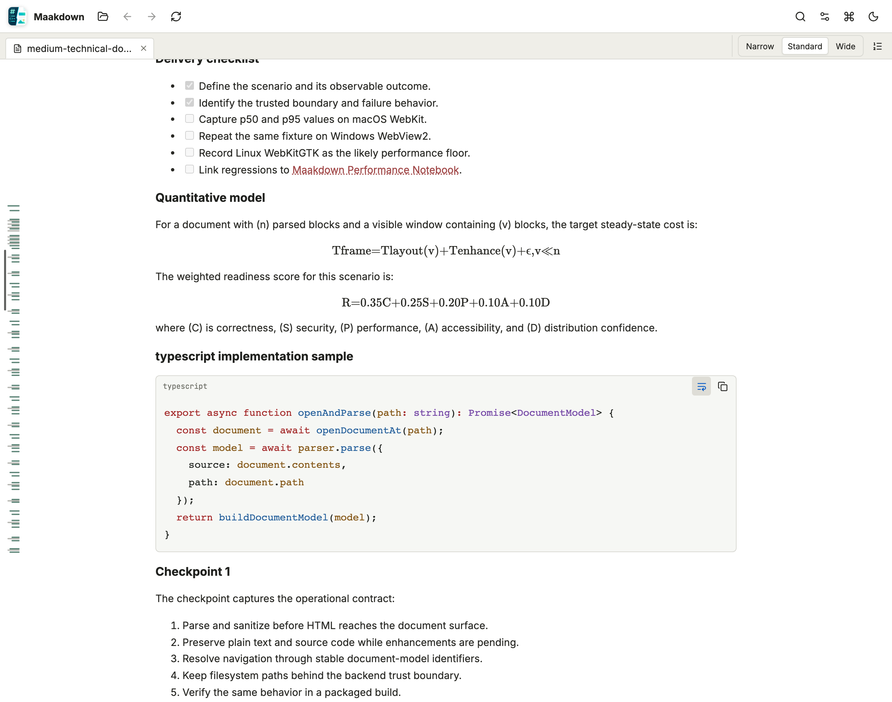
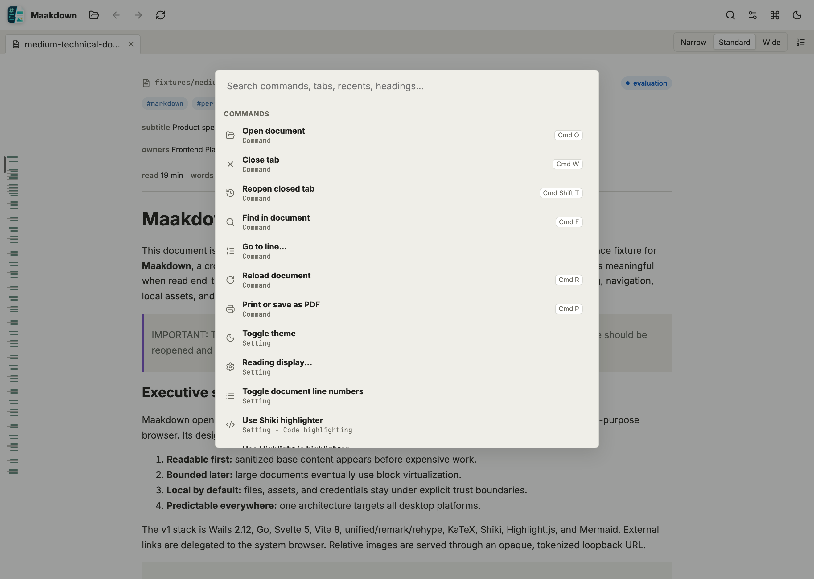
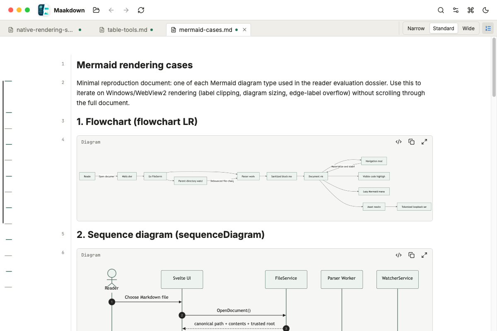

v0.2.0 · Precision Reading & Performance
Precision reading for Markdown.
Read technical documents and personal notes with line-aware navigation, rich tables, code, math, and diagrams in a calm local-first workspace. Your files never leave your machine.
macOS (Apple silicon) · Windows x64 · Linux x64

Change the reading measure or show semantic document line numbers from the tab bar, then jump to any reader line from the command palette.
A virtualized reader keeps 10,000-line documents scrolling smoothly and light on memory. Text appears instantly; code highlighting, math, and diagrams fill in as you read.
Shiki-highlighted code, KaTeX math, Mermaid diagrams, GFM tables, task lists, callouts, footnotes, and local images all just work — safely sanitized.
Constrained columns, row numbers, sorting, type-aware filters, and active chips make dense Markdown tables easier to scan without changing the source file.
Tabs, recent files, drag-and-drop, wikilinks between notes, full-document search, a command palette, and a session that restores itself on relaunch.
A reader, not a cloud app: no account, no telemetry, works offline. Print or export to PDF whenever you need a copy to share.
MIT-licensed, built with Go (Wails) and Svelte. Issues, ideas, and pull requests are welcome on GitHub.





